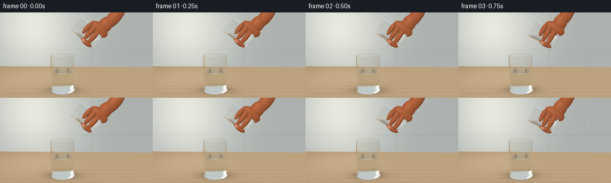
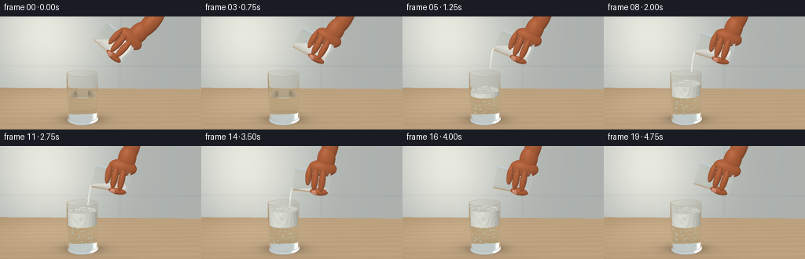
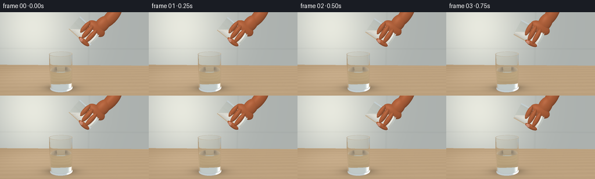
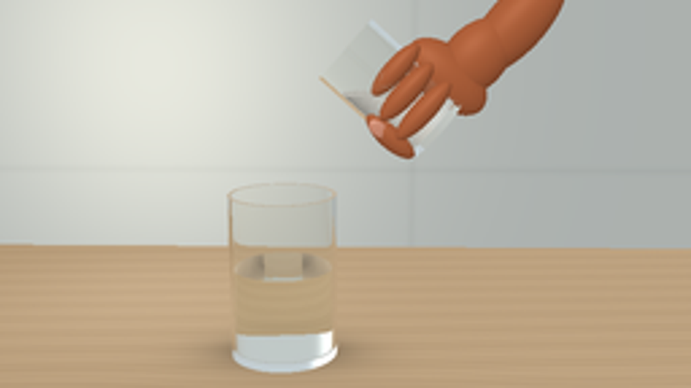

CODING AGENTS AS PIXEL WORLD MODELS
traex/GPT-6.1-Sol · material_0024
点击播放 · 原生 RGB 像素
逐轮保存的候选
回放视频、检查图与代码变化。
每份候选均可单独播放。实际图片检查记录在下方工具轨迹中。
候选 01播放与检查图
点击播放 · 原生 RGB 像素

展开代码变化
--- 上一保存版本
+++ 本次保存版本
@@ -0,0 +1,312 @@
+from pathlib import Path
+import json
+import math
+import numpy as np
+from PIL import Image, ImageDraw, ImageFilter
+import artifact_io
+
+ROOT=Path(__file__).resolve().parent
+SPEC=json.loads((ROOT/'task_spec.json').read_text())
+W,H=SPEC['width'],SPEC['height']
+S=3
+EPS=0.00035
+INF=1e8
+rng=np.random.default_rng(2026)
+
+def normalize(a):
+ return a/np.maximum(np.linalg.norm(a,axis=-1,keepdims=True),1e-12)
+
+def basis(angle):
+ a=np.deg2rad(angle)
+ return np.array([[np.cos(a),np.sin(a),0],[-np.sin(a),np.cos(a),0],[0,0,1]],np.float32)
+
+def local(o,d,c,B):
+ return (o-c)@B.T,d@B.T
+
+def glass_hit(o,d,obj):
+ c,B,r,ri,h,b=obj
+ p,v=local(o,d,c,B)
+ n=len(o); ts=np.full(n,INF,np.float32); ns=np.zeros((n,3),np.float32)
+ aa=v[:,0]**2+v[:,2]**2; bb=p[:,0]*v[:,0]+p[:,2]*v[:,2]
+ for radius,low,sign in [(r,0,1),(ri,b,-1)]:
+ cc=p[:,0]**2+p[:,2]**2-radius**2
+ disc=bb*bb-aa*cc
+ sq=np.sqrt(np.maximum(disc,0))
+ for root in [-1,1]:
+ t=(-bb+root*sq)/np.maximum(aa,1e-12)
+ y=p[:,1]+t*v[:,1]
+ ok=(disc>=0)&(t>EPS)&(y>=low)&(y<=h)&(t<ts)
+ pts=p+v*t[:,None]
+ normal=np.stack((pts[:,0]/radius,np.zeros(n),pts[:,2]/radius),axis=1)*sign
+ ts[ok]=t[ok]; ns[ok]=normal[ok]
+ for y,lo,hi,sign in [(0,0,r,-1),(b,0,ri,1),(h,ri,r,1)]:
+ t=(y-p[:,1])/np.where(np.abs(v[:,1])>1e-9,v[:,1],1e-9)
+ x=p[:,0]+v[:,0]*t; z=p[:,2]+v[:,2]*t
+ rr=x*x+z*z
+ ok=(t>EPS)&(rr>=lo*lo)&(rr<=hi*hi)&(t<ts)
+ ts[ok]=t[ok]; ns[ok]=[0,sign,0]
+ return ts,ns@B
+
+def solid_hit(o,d,obj):
+ # Convex cylinder clipped by a horizontal free surface, used for soda and vinegar.
+ c,B,r,h,b,level=obj
+ p,v=local(o,d,c,B); n=len(o)
+ near=np.full(n,-INF,np.float32); far=np.full(n,INF,np.float32)
+ nn=np.zeros((n,3),np.float32); fn=nn.copy()
+ aa=v[:,0]**2+v[:,2]**2; bb=p[:,0]*v[:,0]+p[:,2]*v[:,2]
+ disc=bb*bb-aa*(p[:,0]**2+p[:,2]**2-r*r)
+ sq=np.sqrt(np.maximum(disc,0)); valid=disc>=0
+ t1=(-bb-sq)/np.maximum(aa,1e-12); t2=(-bb+sq)/np.maximum(aa,1e-12)
+ q1=p+t1[:,None]*v; q2=p+t2[:,None]*v
+ n1=np.stack([q1[:,0]/r,np.zeros(n),q1[:,2]/r],1)@B
+ n2=np.stack([q2[:,0]/r,np.zeros(n),q2[:,2]/r],1)@B
+ near=t1;far=t2;nn=n1;fn=n2
+ for point,normal in [(c+B[1]*b,-B[1]),(c+B[1]*h,B[1]),(np.array([0,level,0],np.float32),np.array([0,1,0],np.float32))]:
+ denom=d@normal
+ t=((point-o)@normal)/np.where(np.abs(denom)>1e-9,denom,1e-9)
+ isentry=denom<0
+ up=isentry&(t>near); dn=(~isentry)&(t<far)
+ near=np.where(up,t,near); nn[up]=normal
+ far=np.where(dn,t,far);fn[dn]=normal
+ valid &= ~((np.abs(denom)<1e-9)&(((o-point)@normal)>0))
+ use=near>EPS
+ tt=np.where(use,near,far); normal=np.where(use[:,None],nn,fn)
+ valid &= (near<=far)&(tt>EPS)
+ return np.where(valid,tt,INF),normal
+
+def ellipse_hit(o,d,c,B,scale):
+ p,v=local(o,d,c,B);p=p/scale;v=v/scale
+ aa=np.sum(v*v,1); bb=np.sum(p*v,1);cc=np.sum(p*p,1)-1
+ disc=bb*bb-aa*cc
+ t=(-bb-np.sqrt(np.maximum(disc,0)))/aa
+ normal=normalize(((p+t[:,None]*v)/scale)@B)
+ return np.where((disc>=0)&(t>EPS),t,INF),normal
+
+# A bright, slightly defocused domestic worktop, with a broad window to the left.
+def backdrop(o,d):
+ n=len(o); col=np.zeros((n,3),np.float32)
+ tw=(-3.4-o[:,2])/np.minimum(d[:,2],-1e-6)
+ q=o+d*tw[:,None]
+ glow=np.exp(-((q[:,0]+2.3)/2.6)**2-((q[:,1]-2.3)/3)**2)
+ base=np.array([.64,.66,.65],np.float32)
+ col[:]=base+glow[:,None]*np.array([.23,.215,.185])
+ # Diffuse cabinetry outlines kept deliberately out of focus.
+ seams=np.exp(-((q[:,0]-.9)/.05)**2)*.018+np.exp(-((q[:,1]-1.0)/.045)**2)*.018
+ col-=seams[:,None]
+ table=d[:,1]<-1e-7
+ t=-o[:,1]/np.where(table,d[:,1],-1e-7)
+ hit=table&(t>0)&((t<tw)|(d[:,2]>=0))
+ p=o+d*t[:,None]
+ x=p[:,0]; z=p[:,2]
+ # Pale satin oak: restrained long fibers, not a busy texture.
+ grain=np.sin(z*48+1.9*np.sin(x*2.3)+.7*np.sin(z*4.5))*0.008
+ grain+=np.sin(z*107+x*.45)*.003
+ grain+=np.sin(z*16+x*.8)*.009
+ tc=np.tile(np.array([.67,.566,.435],np.float32),(n,1))+grain[:,None]
+ tc+=np.clip((x+3)*.007,-.035,.035)[:,None]
+ sh=np.exp(-(((x+.40)/.65)**2+((z-.03)/.44)**2))*0.23
+ contact=np.exp(-(((x+.40)/.46)**2+((z)/.23)**2))*0.22
+ tc*=1-(sh+contact)[:,None]
+ # A broad reflection from the bright wall/window.
+ tc+=np.exp(-((x+2)/2.2)**2-((z+1.5)/2)**2)[:,None]*.065
+ col[hit]=tc[hit]
+ # Reflection rays heading above the scene see the luminous softbox.
+ up=d[:,1]>.16
+ sky=np.tile(np.array([.74,.78,.80]),(n,1))
+ window=np.exp(-((d[:,0]+.55)/.28)**8-((d[:,1]-.58)/.48)**8)
+ sky+=window[:,None]*.4
+ col[up]=sky[up]
+ return np.clip(col,0,1.3)
+
+light=normalize(np.array([-.7,1.5,2.2],np.float32))
+
+# A reproducible uniform volume sample gives the tipped powder its true horizontal free surface.
+pp=rng.uniform(-1,1,(25000,3)).astype(np.float32)
+pp=pp[(pp[:,0]**2+pp[:,2]**2)<1]
+pp[:,0]*=.294;pp[:,2]*=.294;pp[:,1]=.065+(pp[:,1]+1)*.445
+
+
+def scene(frame):
+ u=frame/(SPEC['frames']-1)
+ # Lift, tilt gradually, hold a gentle stream, then return the emptied glass.
+ if u<.18: angle=48+16*(u/.18)**1.3
+ elif u<.70: angle=64+20*(u-.18)/.52
+ else: angle=84-12*((u-.70)/.30)**1.5
+ B=basis(angle)
+ c=np.array([.88+.04*np.sin(u*np.pi),1.98+.045*np.sin(u*np.pi),.04],np.float32)
+ rec=(np.array([-.40,0,0],np.float32),np.eye(3,dtype=np.float32),.465,.431,1.425,.068)
+ src=(c,B,.325,.295,1.0,.058)
+ pouring=np.clip((u-.12)/.64,0,1)
+ remaining=.43*(1-pouring)+.018
+ worldpoints=pp@B+c
+ level=float(np.quantile(worldpoints[:,1],remaining))
+ powder=(c,B,.289,.985,.063,level)
+ react=max(0,(u-.21)/.79)
+ foamheight=.80+.46*(1-np.exp(-react*4.4))-.07*max(0,(u-.84)/.16)
+ liquid=(rec[0],rec[1],.426,1.39,.075,.79)
+ foam=(rec[0],rec[1],.425,1.39,.79,foamheight)
+ objs=[('glass',rec),('glass',src),('powder',powder),('water',liquid)]
+ if react>0: objs.append(('foam',foam))
+ # Fingers and a cropped right hand grasp the base of the pouring tumbler.
+ def hp(p):return c+np.array(p,np.float32)@B
+ hand=[((.39,.23,-.025),(.23,.40,.18)),
+ ((.66,.16,-.045),(.37,.255,.19)),
+ ((1.08,.10,-.08),(.53,.235,.195)),
+ ((.07,.22,.304),(.305,.092,.099)),
+ ((.09,.42,.292),(.30,.095,.098)),
+ ((.16,.60,.255),(.265,.09,.09)),
+ ((-.258,.26,.17),(.106,.255,.121))]
+ for p,s in hand: objs.append(('skin',(hp(p),B,np.array(s,np.float32))))
+ objs.append(('nail',(hp((-.277,.384,.27)),B,np.array([.058,.087,.016],np.float32))))
+ # Small rounded foam domes break the flat surface. Their procedural texture
+ # supplies many still smaller bubbles without needing a large mesh.
+ if react>0:
+ rg=np.random.default_rng(98)
+ for k in range(49):
+ x,z=rg.uniform(-.39,.39,2)
+ if x*x+z*z>.39**2:continue
+ rad=rg.uniform(.033,.073)
+ yy=foamheight-.025+np.sin(frame*.35+k*2.1)*.006
+ objs.append(('foamtop',(np.array([x-.4,yy,z],np.float32),np.eye(3,dtype=np.float32),np.array([rad,rad*.7,rad],np.float32))))
+ # Fine grains and little clumps trace a narrow gravity-driven white stream.
+ if .16<u<.79:
+ lip=c+B[1]*.997-B[0]*.29
+ duration=(frame*.25)
+ for k in range(75):
+ phase=((k*.61803398875+duration*2.05)%1)
+ drop=.5*3.2*(phase*.59)**2
+ y=lip[1]-drop
+ if y<foamheight+.008:continue
+ x=lip[0]-.11*phase
+ z=lip[2]+.010*np.sin(k*16.4+frame*.63)
+ rad=.007+(k%6)*.0018
+ x+=.013*np.sin(k*22.7+frame*.4)
+ objs.append(('grain',(np.array([x,y,z],np.float32),np.eye(3,dtype=np.float32),np.array([rad,rad*1.5,rad],np.float32))))
+ return objs,react,foamheight
+
+
+def opaque_shade(kind,p,n,d,frame):
+ diffuse=np.clip(n@light,0,1)
+ fill=np.clip(n@normalize(np.array([1,.5,-1],np.float32)),0,1)
+ lam=.48+.46*diffuse+.06*fill
+ if kind in ('powder','grain'):
+ grit=(np.sin(p[:,0]*1531+p[:,2]*1733)*np.sin(p[:,1]*1387-p[:,2]*1691))
+ albedo=np.tile(np.array([.93,.927,.90],np.float32),(len(p),1))
+ albedo*= (1+.065*grit)[:,None]
+ # Granular, chalky, dry baking soda.
+ return albedo*lam[:,None]
+ if kind in ('foam','foamtop'):
+ # Cellular glints and soft bubble walls on a dense ivory foam.
+ coords=p[:,[0,2]] if kind=='foamtop' else p[:,[0,1]]
+ freq=68
+ q=coords*freq
+ f=q-np.floor(q)-.5
+ r=np.sqrt(np.sum(f*f,1))
+ ring=np.exp(-((r-.33)/.065)**2)
+ tiny=np.sin(p[:,0]*633+p[:,1]*401+p[:,2]*421)*.018
+ albedo=np.tile(np.array([.94,.956,.923],np.float32),(len(p),1))
+ albedo*=(.96-.12*ring+tiny)[:,None]
+ spec=np.clip(np.sum(normalize(light-d)*n,1),0,1)**48
+ albedo*= (.67+.33*diffuse)[:,None]
+ return albedo+spec[:,None]*.14
+ if kind in ('skin','nail'):
+ pores=np.sin(p[:,0]*604+p[:,1]*311)*np.sin(p[:,2]*427-p[:,1]*590)*.005
+ base=np.array([.635,.345,.211],np.float32) if kind=='skin' else np.array([.76,.51,.415],np.float32)
+ col=base[None,:]*(.70+.35*diffuse+.04*fill)[:,None]+pores[:,None]
+ spec=np.clip(np.sum(normalize(light-d)*n,1),0,1)**(35 if kind=='skin' else 60)
+ col+=spec[:,None]*(.045 if kind=='skin' else .12)
+ return col
+ return np.ones_like(p)*.8
+
+
+def render(frame):
+ objects,react,fh=scene(frame)
+ cam=np.array([.30,2.95,7.0],np.float32)
+ aim=np.array([.14,1.43,0],np.float32)
+ forward=normalize(aim-cam); right=normalize(np.cross(forward,[0,1,0])); up=normalize(np.cross(right,forward))
+ xx,yy=np.meshgrid((np.arange(W*S)+.5)/(W*S)-.5,.5-(np.arange(H*S)+.5)/(H*S))
+ # An almost-orthographic long lens gives an uncluttered macro still-life composition.
+ d=normalize(forward+xx.reshape(-1,1)*right*.82+yy.reshape(-1,1)*up*.82*H/W).astype(np.float32)
+ o=np.broadcast_to(cam,d.shape).copy()
+ size=len(o); output=np.zeros((size,3),np.float32); throughput=np.ones((size,3),np.float32)
+ ids=np.arange(size); ior=np.ones(size,np.float32)
+ for bounce in range(13):
+ if len(ids)==0:break
+ count=len(ids); ts=np.full(count,INF,np.float32); ns=np.zeros((count,3),np.float32); mats=np.full(count,-1,np.int16)
+ # First intersect large objects. Grain/foam spheres have an inexpensive
+ # screen-cone rejection before their quadratic intersection.
+ for j,(kind,obj) in enumerate(objects):
+ if kind=='glass':t,n=glass_hit(o,d,obj)
+ elif kind in ('powder','water','foam'):t,n=solid_hit(o,d,obj)
+ else:
+ c,B,sc=obj
+ if kind in ('grain','foamtop'):
+ rel=c-o; tt=np.sum(rel*d,1)
+ perp=rel-tt[:,None]*d
+ possible=(tt>0)&(np.sum(perp*perp,1)<float(max(sc)*1.02)**2)&(tt-max(sc)<ts)
+ if not np.any(possible):continue
+ rr=np.flatnonzero(possible)
+ st,sn=ellipse_hit(o[rr],d[rr],c,B,sc)
+ ok=st<ts[rr]; rr=rr[ok]
+ ts[rr]=st[ok];ns[rr]=sn[ok];mats[rr]=j
+ continue
+ t,n=ellipse_hit(o,d,*obj)
+ ok=t<ts;ts[ok]=t[ok];ns[ok]=n[ok];mats[ok]=j
+ miss=mats<0
+ if np.any(miss):output[ids[miss]]+=throughput[ids[miss]]*backdrop(o[miss],d[miss])
+ active=~miss
+ if not np.any(active):break
+ ids=ids[active];o=o[active];d=d[active];ts=ts[active];ns=ns[active];mats=mats[active];ior=ior[active]
+ p=o+ts[:,None]*d
+ transparent=np.zeros(len(ids),bool)
+ for j,(kind,obj) in enumerate(objects):
+ mask=mats==j
+ if not np.any(mask):continue
+ if kind in ('glass','water'):
+ transparent[mask]=True
+ old=ior[mask]
+ nd=np.sum(ns[mask]*d[mask],1)
+ entering=nd<0
+ new=np.where(entering,1.51 if kind=='glass' else 1.333,1.0).astype(np.float32)
+ norm=np.where(entering[:,None],ns[mask],-ns[mask])
+ cosine=-np.sum(norm*d[mask],1)
+ eta=old/new
+ disc=1-eta*eta*(1-cosine*cosine)
+ total=disc<0
+ refl=d[mask]+2*cosine[:,None]*norm
+ fres=((old-new)/(old+new))**2
+ fres=fres+(1-fres)*(1-cosine)**5
+ fres=np.where(total,1,fres)
+ env=backdrop(p[mask],refl)
+ # Long soft window reflections on polished, transparent walls.
+ rr=normalize(refl)
+ bright=np.exp(-((rr[:,0]+.68)/.20)**8-((rr[:,1]-.42)/.5)**8)
+ env+=bright[:,None]*.65
+ output[ids[mask]]+=throughput[ids[mask]]*fres[:,None]*env
+ throughput[ids[mask]]*=(1-fres[:,None])
+ throughput[ids[mask]]*=np.array([.992,.996,.996]) if kind=='glass' else np.array([.993,.995,.98])
+ refr=eta[:,None]*d[mask]+(eta*cosine-np.sqrt(np.maximum(disc,0)))[:,None]*norm
+ refr=np.where(total[:,None],refl,refr)
+ d[mask]=normalize(refr)
+ ior[mask]=np.where(total,old,new)
+ else:
+ col=opaque_shade(kind,p[mask],ns[mask],d[mask],frame)
+ output[ids[mask]]+=throughput[ids[mask]]*col
+ # Forward transport through curved glass and vinegar.
+ ids=ids[transparent];d=d[transparent];o=p[transparent]+d*EPS*1.7;ior=ior[transparent]
+ if len(ids):output[ids]+=throughput[ids]*backdrop(o,d)
+ out=np.clip(output.reshape(H*S,W*S,3),0,1)
+ # Filmic contrast and subtle natural photographic grain, constant through time.
+ out=np.clip(out*1.06-.02,0,1)**.94
+ image=Image.fromarray((out*255).astype(np.uint8)).resize((W,H),Image.Resampling.LANCZOS)
+ return np.asarray(image)
+
+
+def main():
+ frames=[]
+ for i in range(SPEC['frames']):
+ print(f'Rendering {i+1}/{SPEC["frames"]}',flush=True)
+ frames.append(render(i))
+ artifact_io.save(np.stack(frames).astype(np.uint8),ROOT)
+
+if __name__=='__main__':main()
候选 02播放与检查图
点击播放 · 原生 RGB 像素


展开代码变化
--- 上一保存版本
+++ 本次保存版本
@@ -137,7 +137,7 @@
rec=(np.array([-.40,0,0],np.float32),np.eye(3,dtype=np.float32),.465,.431,1.425,.068)
src=(c,B,.325,.295,1.0,.058)
pouring=np.clip((u-.12)/.64,0,1)
- remaining=.43*(1-pouring)+.018
+ remaining=.60*(1-pouring)+.018
worldpoints=pp@B+c
level=float(np.quantile(worldpoints[:,1],remaining))
powder=(c,B,.289,.985,.063,level)
@@ -158,6 +158,15 @@
((-.258,.26,.17),(.106,.255,.121))]
for p,s in hand: objs.append(('skin',(hp(p),B,np.array(s,np.float32))))
objs.append(('nail',(hp((-.277,.384,.27)),B,np.array([.058,.087,.016],np.float32))))
+ # Tiny bubbles rise through the clear liquid as the acid reacts.
+ if react>0:
+ rg=np.random.default_rng(386)
+ for k in range(42):
+ x,z=rg.uniform(-.37,.37,2)
+ if x*x+z*z>.37**2:continue
+ y=.12+((k*.381966+frame*.081)%1)*.64
+ rad=rg.uniform(.009,.022)*(1+.2*y)
+ objs.append(('bubble',(np.array([x-.4,y,z],np.float32),np.eye(3,dtype=np.float32),np.array([rad,rad,rad],np.float32))))
# Small rounded foam domes break the flat surface. Their procedural texture
# supplies many still smaller bubbles without needing a large mesh.
if react>0:
@@ -172,7 +181,7 @@
if .16<u<.79:
lip=c+B[1]*.997-B[0]*.29
duration=(frame*.25)
- for k in range(75):
+ for k in range(135):
phase=((k*.61803398875+duration*2.05)%1)
drop=.5*3.2*(phase*.59)**2
y=lip[1]-drop
@@ -194,7 +203,7 @@
albedo=np.tile(np.array([.93,.927,.90],np.float32),(len(p),1))
albedo*= (1+.065*grit)[:,None]
# Granular, chalky, dry baking soda.
- return albedo*lam[:,None]
+ return albedo*(.78+.22*diffuse)[:,None]
if kind in ('foam','foamtop'):
# Cellular glints and soft bubble walls on a dense ivory foam.
coords=p[:,[0,2]] if kind=='foamtop' else p[:,[0,1]]
@@ -209,6 +218,11 @@
spec=np.clip(np.sum(normalize(light-d)*n,1),0,1)**48
albedo*= (.67+.33*diffuse)[:,None]
return albedo+spec[:,None]*.14
+ if kind=='bubble':
+ facing=np.clip(-np.sum(n*d,1),0,1)
+ rim=(1-facing)**2
+ spec=np.clip(np.sum(normalize(light-d)*n,1),0,1)**24
+ return np.tile(np.array([.63,.66,.61],np.float32),(len(p),1))+(rim*.21+spec*.35)[:,None]
if kind in ('skin','nail'):
pores=np.sin(p[:,0]*604+p[:,1]*311)*np.sin(p[:,2]*427-p[:,1]*590)*.005
base=np.array([.635,.345,.211],np.float32) if kind=='skin' else np.array([.76,.51,.415],np.float32)
@@ -240,7 +254,7 @@
elif kind in ('powder','water','foam'):t,n=solid_hit(o,d,obj)
else:
c,B,sc=obj
- if kind in ('grain','foamtop'):
+ if kind in ('grain','foamtop','bubble'):
rel=c-o; tt=np.sum(rel*d,1)
perp=rel-tt[:,None]*d
possible=(tt>0)&(np.sum(perp*perp,1)<float(max(sc)*1.02)**2)&(tt-max(sc)<ts)
可观测工具轨迹
实际执行的命令与返回图片。
命令 1exit 0
/bin/bash -lc 'ls -la && cat prompt.txt && cat GENERATION_RULES.md && cat task_spec.json'
命令 2exit 0
/bin/bash -lc "cat artifact_io.py && python - <<'PY'
import PIL,numpy
print('available')
PY"命令 3exit 0
/bin/bash -lc "cat > generate.py <<'PY'
from pathlib import Path
import json
import math
import numpy as np
from PIL import Image, ImageDraw, ImageFilter
import artifact_io
ROOT=Path(__file__).resolve().parent
SPEC=json.loads((ROOT/'task_spec.json').read_text())
W,H=SPEC['width'],SPEC['height']
S=3
EPS=0.00035
INF=1e8
rng=np.random.default_rng(2026)
def normalize(a):
return a/np.maximum(np.linalg.norm(a,axis=-1,keepdims=True),1e-12)
def basis(angle):
a=np.deg2rad(angle)
return np.array([[np.cos(a),np.sin(a),0],[-np.sin(a),np.cos(a),0],[0,0,1]],np.float32)
def local(o,d,c,B):
return (o-c)@B.T,d@B.T
def glass_hit(o,d,obj):
c,B,r,ri,h,b=obj
p,v=local(o,d,c,B)
n=len(o); ts=np.full(n,INF,np.float32); ns=np.zeros((n,3),np.float32)
aa=v[:,0]**2+v[:,2]**2; bb=p[:,0]*v[:,0]+p[:,2]*v[:,2]
for radius,low,sign in [(r,0,1),(ri,b,-1)]:
cc=p[:,0]**2+p[:,2]**2-radius**2
disc=bb*bb-aa*cc
sq=np.sqrt(np.maximum(disc,0))
for root in [-1,1]:
t=(-bb+root*sq)/np.maximum(aa,1e-12)
y=p[:,1]+t*v[:,1]
ok=(disc>=0)&(t>EPS)&(y>=low)&(y<=h)&(t<ts)
pts=p+v*t[:,None]
normal=np.stack((pts[:,0]/radius,np.zeros(n),pts[:,2]/radius),axis=1)*sign
ts[ok]=t[ok]; ns[ok]=normal[ok]
for y,lo,hi,sign in [(0,0,r,-1),(b,0,ri,1),(h,ri,r,1)]:
t=(y-p[:,1])/np.where(np.abs(v[:,1])>1e-9,v[:,1],1e-9)
x=p[:,0]+v[:,0]*t; z=p[:,2]+v[:,2]*t
rr=x*x+z*z
ok=(t>EPS)&(rr>=lo*lo)&(rr<=hi*hi)&(t<ts)
ts[ok]=t[ok]; ns[ok]=[0,sign,0]
return ts,ns@B
def solid_hit(o,d,obj):
# Convex cylinder clipped by a horizontal free surface, used for soda and vinegar.
c,B,r,h,b,level=obj
p,v=local(o,d,c,B); n=len(o)
near=np.full(n,-INF,np.float32); far=np.full(n,INF,np.float32)
nn=np.zeros((n,3),np.float32); fn=nn.copy()
aa=v[:,0]**2+v[:,2]**2; bb=p[:,0]*v[:,0]+p[:,2]*v[:,2]
disc=bb*bb-aa*(p[:,0]**2+p[:,2]**2-r*r)
sq=np.sqrt(np.maximum(disc,0)); valid=disc>=0
t1=(-bb-sq)/np.maximum(aa,1e-12); t2=(-bb+sq)/np.maximum(aa,1e-12)
q1=p+t1[:,None]*v; q2=p+t2[:,None]*v
n1=np.stack([q1[:,0]/r,np.zeros(n),q1[:,2]/r],1)@B
n2=np.stack([q2[:,0]/r,np.zeros(n),q2[:,2]/r],1)@B
near=t1;far=t2;nn=n1;fn=n2
for point,normal in [(c+B[1]*b,-B[1]),(c+B[1]*h,B[1]),(np.array([0,level,0],np.float32),np.array([0,1,0],np.float32))]:
denom=d@normal
t=((point-o)@normal)/np.where(np.abs(denom)>1e-9,denom,1e-9)
isentry=denom<0
up=isentry&(t>near); dn=(~isentry)&(t<far)
near=np.where(up,t,near); nn[up]=normal
far=np.where(dn,t,far);fn[dn]=normal
valid &= ~((np.abs(denom)<1e-9)&(((o-point)@normal)>0))
use=near>EPS
tt=np.where(use,near,far); normal=np.where(use[:,None],nn,fn)
valid &= (near<=far)&(tt>EPS)
return np.where(valid,tt,INF),normal
def ellipse_hit(o,d,c,B,scale):
p,v=local(o,d,c,B);p=p/scale;v=v/scale
aa=np.sum(v*v,1); bb=np.sum(p*v,1);cc=np.sum(p*p,1)-1
disc=bb*bb-aa*cc
t=(-bb-np.sqrt(np.maximum(disc,0)))/aa
normal=normalize(((p+t[:,None]*v)/scale)@B)
return np.where((disc>=0)&(t>EPS),t,INF),normal
# A bright, slightly defocused domestic worktop, with a broad window to the left.
def backdrop(o,d):
n=len(o); col=np.zeros((n,3),np.float32)
tw=(-3.4-o[:,2])/np.minimum(d[:,2],-1e-6)
q=o+d*tw[:,None]
glow=np.exp(-((q[:,0]+2.3)/2.6)**2-((q[:,1]-2.3)/3)**2)
base=np.array([.64,.66,.65],np.float32)
col[:]=base+glow[:,None]*np.array([.23,.215,.185])
# Diffuse cabinetry outlines kept deliberately out of focus.
seams=np.exp(-((q[:,0]-.9)/.05)**2)*.018+np.exp(-((q[:,1]-1.0)/.045)**2)*.018
col-=seams[:,None]
table=d[:,1]<-1e-7
t=-o[:,1]/np.where(table,d[:,1],-1e-7)
hit=table&(t>0)&((t<tw)|(d[:,2]>=0))
p=o+d*t[:,None]
x=p[:,0]; z=p[:,2]
# Pale satin oak: restrained long fibers, not a busy texture.
grain=np.sin(z*48+1.9*np.sin(x*2.3)+.7*np.sin(z*4.5))*0.008
grain+=np.sin(z*107+x*.45)*.003
grain+=np.sin(z*16+x*.8)*.009
tc=np.tile(np.array([.67,.566,.435],np.float32),(n,1))+grain[:,None]
tc+=np.clip((x+3)*.007,-.035,.035)[:,None]
sh=np.exp(-(((x+.40)/.65)**2+((z-.03)/.44)**2))*0.23
contact=np.exp(-(((x+.40)/.46)**2+((z)/.23)**2))*0.22
tc*=1-(sh+contact)[:,None]
# A broad reflection from the bright wall/window.
tc+=np.exp(-((x+2)/2.2)**2-((z+1.5)/2)**2)[:,None]*.065
col[hit]=tc[hit]
# Reflection rays heading above the scene see the luminous softbox.
up=d[:,1]>.16
sky=np.tile(np.array([.74,.78,.80]),(n,1))
window=np.exp(-((d[:,0]+.55)/.28)**8-((d[:,1]-.58)/.48)**8)
sky+=window[:,None]*.4
col[up]=sky[up]
return np.clip(col,0,1.3)
light=normalize(np.array([-.7,1.5,2.2],np.float32))
# A reproducible uniform volume sample gives the tipped powder its true horizontal free surface.
pp=rng.uniform(-1,1,(25000,3)).astype(np.float32)
pp=pp[(pp[:,0]**2+pp[:,2]**2)<1]
pp[:,0]*=.294;pp[:,2]*=.294;pp[:,1]=.065+(pp[:,1]+1)*.445
def scene(frame):
u=frame/(SPEC['frames']-1)
# Lift, tilt gradually, hold a gentle stream, then return the emptied glass.
if u<.18: angle=48+16*(u/.18)**1.3
elif u<.70: angle=64+20*(u-.18)/.52
else: angle=84-12*((u-.70)/.30)**1.5
B=basis(angle)
c=np.array([.88+.04*np.sin(u*np.pi),1.98+.045*np.sin(u*np.pi),.04],np.float32)
rec=(np.array([-.40,0,0],np.float32),np.eye(3,dtype=np.float32),.465,.431,1.425,.068)
src=(c,B,.325,.295,1.0,.058)
pouring=np.clip((u-.12)/.64,0,1)
remaining=.43*(1-pouring)+.018
worldpoints=pp@B+c
level=float(np.quantile(worldpoints[:,1],remaining))
powder=(c,B,.289,.985,.063,level)
react=max(0,(u-.21)/.79)
foamheight=.80+.46*(1-np.exp(-react*4.4))-.07*max(0,(u-.84)/.16)
liquid=(rec[0],rec[1],.426,1.39,.075,.79)
foam=(rec[0],rec[1],.425,1.39,.79,foamheight)
objs=[('glass',rec),('glass',src),('powder',powder),('water',liquid)]
if react>0: objs.append(('foam',foam))
# Fingers and a cropped right hand grasp the base of the pouring tumbler.
def hp(p):return c+np.array(p,np.float32)@B
hand=[((.39,.23,-.025),(.23,.40,.18)),
((.66,.16,-.045),(.37,.255,.19)),
((1.08,.10,-.08),(.53,.235,.195)),
((.07,.22,.304),(.305,.092,.099)),
((.09,.42,.292),(.30,.095,.098)),
((.16,.60,.255),(.265,.09,.09)),
((-.258,.26,.17),(.106,.255,.121))]
for p,s in hand: objs.append(('skin',(hp(p),B,np.array(s,np.float32))))
objs.append(('nail',(hp((-.277,.384,.27)),B,np.array([.058,.087,.016],np.float32))))
# Small rounded foam domes break the flat surface. Their procedural texture
# supplies many still smaller bubbles without needing a large mesh.
if react>0:
rg=np.random.default_rng(98)
for k in range(49):
x,z=rg.uniform(-.39,.39,2)
if x*x+z*z>.39**2:continue
rad=rg.uniform(.033,.073)
yy=foamheight-.025+np.sin(frame*.35+k*2.1)*.006
objs.append(('foamtop',(np.array([x-.4,yy,z],np.float32),np.eye(3,dtype=np.float32),np.array([rad,rad*.7,rad],np.float32))))
# Fine grains and little clumps trace a narrow gravity-driven white stream.
if .16<u<.79:
lip=c+B[1]*.997-B[0]*.29
duration=(frame*.25)
for k in range(75):
phase=((k*.61803398875+duration*2.05)%1)
drop=.5*3.2*(phase*.59)**2
y=lip[1]-drop
if y<foamheight+.008:continue
x=lip[0]-.11*phase
z=lip[2]+.010*np.sin(k*16.4+frame*.63)
rad=.007+(k%6)*.0018
x+=.013*np.sin(k*22.7+frame*.4)
objs.append(('grain',(np.array([x,y,z],np.float32),np.eye(3,dtype=np.float32),np.array([rad,rad*1.5,rad],np.float32))))
return objs,react,foamheight
def opaque_shade(kind,p,n,d,frame):
diffuse=np.clip(n@light,0,1)
fill=np.clip(n@normalize(np.array([1,.5,-1],np.float32)),0,1)
lam=.48+.46*diffuse+.06*fill
if kind in ('powder','grain'):
grit=(np.sin(p[:,0]*1531+p[:,2]*1733)*np.sin(p[:,1]*1387-p[:,2]*1691))
albedo=np.tile(np.array([.93,.927,.90],np.float32),(len(p),1))
albedo*= (1+.065*grit)[:,None]
# Granular, chalky, dry baking soda.
return albedo*lam[:,None]
if kind in ('foam','foamtop'):
# Cellular glints and soft bubble walls on a dense ivory foam.
coords=p[:,[0,2]] if kind=='foamtop' else p[:,[0,1]]
freq=68
q=coords*freq
f=q-np.floor(q)-.5
r=np.sqrt(np.sum(f*f,1))
ring=np.exp(-((r-.33)/.065)**2)
tiny=np.sin(p[:,0]*633+p[:,1]*401+p[:,2]*421)*.018
albedo=np.tile(np.array([.94,.956,.923],np.float32),(len(p),1))
albedo*=(.96-.12*ring+tiny)[:,None]
spec=np.clip(np.sum(normalize(light-d)*n,1),0,1)**48
albedo*= (.67+.33*diffuse)[:,None]
return albedo+spec[:,None]*.14
if kind in ('skin','nail'):
pores=np.sin(p[:,0]*604+p[:,1]*311)*np.sin(p[:,2]*427-p[:,1]*590)*.005
base=np.array([.635,.345,.211],np.float32) if kind=='skin' else np.array([.76,.51,.415],np.float32)
col=base[None,:]*(.70+.35*diffuse+.04*fill)[:,None]+pores[:,None]
spec=np.clip(np.sum(normalize(light-d)*n,1),0,1)**(35 if kind=='skin' else 60)
col+=spec[:,None]*(.045 if kind=='skin' else .12)
return col
return np.ones_like(p)*.8
def render(frame):
objects,react,fh=scene(frame)
cam=np.array([.30,2.95,7.0],np.float32)
aim=np.array([.14,1.43,0],np.float32)
forward=normalize(aim-cam); right=normalize(np.cross(forward,[0,1,0])); up=normalize(np.cross(right,forward))
xx,yy=np.meshgrid((np.arange(W*S)+.5)/(W*S)-.5,.5-(np.arange(H*S)+.5)/(H*S))
# An almost-orthographic long lens gives an uncluttered macro still-life composition.
d=normalize(forward+xx.reshape(-1,1)*right*.82+yy.reshape(-1,1)*up*.82*H/W).astype(np.float32)
o=np.broadcast_to(cam,d.shape).copy()
size=len(o); output=np.zeros((size,3),np.float32); throughput=np.ones((size,3),np.float32)
ids=np.arange(size); ior=np.ones(size,np.float32)
for bounce in range(13):
if len(ids)==0:break
count=len(ids); ts=np.full(count,INF,np.float32); ns=np.zeros((count,3),np.float32); mats=np.full(count,-1,np.int16)
# First intersect large objects. Grain/foam spheres have an inexpensive
# screen-cone rejection before their quadratic intersection.
for j,(kind,obj) in enumerate(objects):
if kind=='glass':t,n=glass_hit(o,d,obj)
elif kind in ('powder','water','foam'):t,n=solid_hit(o,d,obj)
else:
c,B,sc=obj
if kind in ('grain','foamtop'):
rel=c-o; tt=np.sum(rel*d,1)
perp=rel-tt[:,None]*d
possible=(tt>0)&(np.sum(perp*perp,1)<float(max(sc)*1.02)**2)&(tt-max(sc)<ts)
if not np.any(possible):continue
rr=np.flatnonzero(possible)
st,sn=ellipse_hit(o[rr],d[rr],c,B,sc)
ok=st<ts[rr]; rr=rr[ok]
ts[rr]=st[ok];ns[rr]=sn[ok];mats[rr]=j
continue
t,n=ellipse_hit(o,d,*obj)
ok=t<ts;ts[ok]=t[ok];ns[ok]=n[ok];mats[ok]=j
miss=mats<0
if np.any(miss):output[ids[miss]]+=throughput[ids[miss]]*backdrop(o[miss],d[miss])
active=~miss
if not np.any(active):break
ids=ids[active];o=o[active];d=d[active];ts=ts[active];ns=ns[active];mats=mats[active];ior=ior[active]
p=o+ts[:,None]*d
transparent=np.zeros(len(ids),bool)
for j,(kind,obj) in enumerate(objects):
mask=mats==j
if not np.any(mask):continue
if kind in ('glass','water'):
transparent[mask]=True
old=ior[mask]
nd=np.sum(ns[mask]*d[mask],1)
entering=nd<0
new=np.where(entering,1.51 if kind=='glass' else 1.333,1.0).astype(np.float32)
norm=np.where(entering[:,None],ns[mask],-ns[mask])
cosine=-np.sum(norm*d[mask],1)
eta=old/new
disc=1-eta*eta*(1-cosine*cosine)
total=disc<0
refl=d[mask]+2*cosine[:,None]*norm
fres=((old-new)/(old+new))**2
fres=fres+(1-fres)*(1-cosine)**5
fres=np.where(total,1,fres)
env=backdrop(p[mask],refl)
# Long soft window reflections on polished, transparent walls.
rr=normalize(refl)
bright=np.exp(-((rr[:,0]+.68)/.20)**8-((rr[:,1]-.42)/.5)**8)
env+=bright[:,None]*.65
output[ids[mask]]+=throughput[ids[mask]]*fres[:,None]*env
throughput[ids[mask]]*=(1-fres[:,None])
throughput[ids[mask]]*=np.array([.992,.996,.996]) if kind=='glass' else np.array([.993,.995,.98])
refr=eta[:,None]*d[mask]+(eta*cosine-np.sqrt(np.maximum(disc,0)))[:,None]*norm
refr=np.where(total[:,None],refl,refr)
d[mask]=normalize(refr)
ior[mask]=np.where(total,old,new)
else:
col=opaque_shade(kind,p[mask],ns[mask],d[mask],frame)
output[ids[mask]]+=throughput[ids[mask]]*col
# Forward transport through curved glass and vinegar.
ids=ids[transparent];d=d[transparent];o=p[transparent]+d*EPS*1.7;ior=ior[transparent]
if len(ids):output[ids]+=throughput[ids]*backdrop(o,d)
out=np.clip(output.reshape(H*S,W*S,3),0,1)
# Filmic contrast and subtle natural photographic grain, constant through time.
out=np.clip(out*1.06-.02,0,1)**.94
image=Image.fromarray((out*255).astype(np.uint8)).resize((W,H),Image.Resampling.LANCZOS)
return np.asarray(image)
def main():
frames=[]
for i in range(SPEC['frames']):
print(f'Rendering {i+1}/{SPEC[\"frames\"]}',flush=True)
frames.append(render(i))
artifact_io.save(np.stack(frames).astype(np.uint8),ROOT)
if __name__=='__main__':main()
PY
OPENBLAS_NUM_THREADS=1 python generate.py"命令 4exit 0
/bin/bash -lc "python - <<'PY'
from PIL import Image
Image.open('frames/00.png').resize((1024,576)).save('.tmp/large.png')
PY"命令 5exit 0
/bin/bash -lc 'command -v ffmpeg || true'
命令 6exit 0
/bin/bash -lc "python - <<'PY'
p='generate.py'
s=open(p).read().replace(\"remaining=.43*(1-pouring)+.018\", \"remaining=.60*(1-pouring)+.018\")
s=s.replace(\"return albedo*lam[:,None]\", \"return albedo*(.78+.22*diffuse)[:,None]\")
s=s.replace(\"for k in range(75):\", \"for k in range(135):\")
s=s.replace(\"# Small rounded foam domes break\", \"\"\"# Tiny bubbles rise through the clear liquid as the acid reacts.
if react>0:
rg=np.random.default_rng(386)
for k in range(42):
x,z=rg.uniform(-.37,.37,2)
if x*x+z*z>.37**2:continue
y=.12+((k*.381966+frame*.081)%1)*.64
rad=rg.uniform(.009,.022)*(1+.2*y)
objs.append(('bubble',(np.array([x-.4,y,z],np.float32),np.eye(3,dtype=np.float32),np.array([rad,rad,rad],np.float32))))
# Small rounded foam domes break\"\"\")
s=s.replace(\"('grain','foamtop'):\", \"('grain','foamtop','bubble'):\")
s=s.replace(\"if kind in ('skin','nail'):\", \"\"\"if kind=='bubble':
facing=np.clip(-np.sum(n*d,1),0,1)
rim=(1-facing)**2
spec=np.clip(np.sum(normalize(light-d)*n,1),0,1)**24
return np.tile(np.array([.63,.66,.61],np.float32),(len(p),1))+(rim*.21+spec*.35)[:,None]
if kind in ('skin','nail'):\"\"\")
open(p,'w').write(s)
PY
OPENBLAS_NUM_THREADS=1 python generate.py"命令 7exit 0
/bin/bash -lc "python - <<'PY'
from pathlib import Path
import numpy as np
from PIL import Image
p=np.load('pixels.npz')['pixels']
assert p.shape==(144,256,20)
files=list(Path('frames').glob('*.png'))
assert len(files)==20
assert all(Image.open(f).size==(256,144) and Image.open(f).mode=='RGB' for f in files)
for f in ['generate.py','pixels.npz','index.html','inspection.png','transition_check.png']:
assert Path(f).is_file()
print('Verified 20 RGB frames, 256Ã144, 4 fps; all required artifacts saved.')
PY"视觉工具实际返回图片 1

视觉工具实际返回图片 2

视觉工具实际返回图片 3

保存候选 2 份；完成命令 7 次；可验证图片返回 3 张。原始 API 响应与完整日志保留在本地。